pacman::p_load(tidyverse,ggplot2,dplyr,qcc)Hands-on Exercise 1
1 A Layered Grammar of Graphics: ggplot2 methods
1.1 Learning Outcome
In this chapter, we will learn the basic principles and essential components of ggplot2. At the same time, we will gain hands-on experience on using these components to plot statistical graphics based on the principle of Layered Grammar of Graphics. By then end of this chapter we will be able to apply the essential graphical elements provided by ggplot2 to create elegant and yet functional statistical graphics.
1.2 Getting started
1.2.1 Installing and loading the required libraries
Note
The code chunk on the right assumes that you already have pacman package installed. If not, please go ahead install pacman first.
1.2.2 Importing data
exam_data <- read_csv("data/Exam_data.csv")Rows: 322 Columns: 7
── Column specification ────────────────────────────────────────────────────────
Delimiter: ","
chr (4): ID, CLASS, GENDER, RACE
dbl (3): ENGLISH, MATHS, SCIENCE
ℹ Use `spec()` to retrieve the full column specification for this data.
ℹ Specify the column types or set `show_col_types = FALSE` to quiet this message.1.3 Introducing ggplot
1.3.1 R Graphics VS ggplot
hist(exam_data$MATHS)
ggplot(data=exam_data, aes(x = MATHS)) +
geom_histogram(bins=10,
boundary = 100,
color="black",
fill="grey") +
ggtitle("Distribution of Maths scores")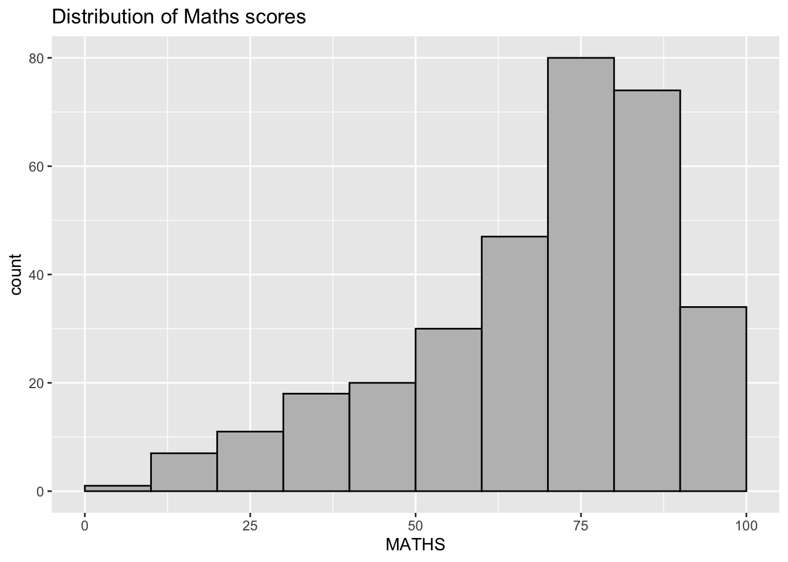
As you can see that the code chunk is relatively simple if R Graphics is used.
Tip
Key Advantages of ggplot2 for Beginners: As pointed out by Hadley Wickham
Automatic Legends:
ggplot2 automatically generates legends based on aesthetics, saving beginners from manually coding them (as required in base R).
Easy Faceting:
ggplot2 simplifies the creation of subplots using facet_wrap() or facet_grid(), whereas base R requires complex loops and layout setup.
Encourages Tidy Data:
Working with ggplot2 promotes the use of tidy data, which aligns with good practices in R and integrates well with tools like dplyr and lm().
Better Visuals by Default:
ggplot2 produces cleaner, more visually appealing plots with minimal effort, making it more accessible for beginners.
Important
The transferable skills from ggplot2 are not the idiosyncrasies of plotting syntax, but a powerful way of thinking about visualisation, as a way of mapping between variables and the visual properties of geometric objects that you can perceive.
1.4 Grammar of Graphics
There are two principles in Grammar of Graphics, they are:
Graphics = distinct layers of grammatical elements
Meaningful plots through aesthetic mapping
A good grammar of graphics will allow us to gain insight into the composition of complicated graphics, and reveal unexpected connections between seemingly different graphics (Cox 1978). It also provides a strong foundation for understanding a diverse range of graphics. Furthermore, it may also help guide us on what a well-formed or correct graphic looks like, but there will still be many grammatically correct but nonsensical graphics.
1.4.1 A Layered Grammar of Graphics
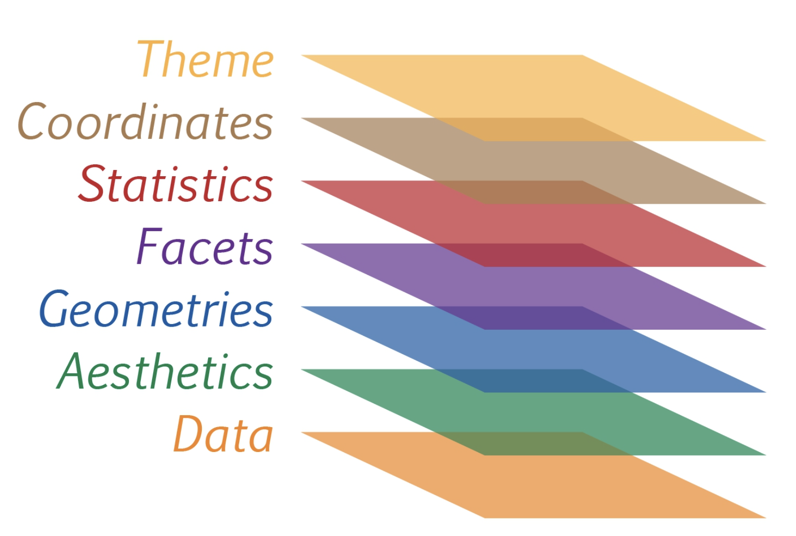
Reference: Hadley Wickham (2010) “A layered grammar of graphics.” Journal of Computational and Graphical Statistics, vol. 19, no. 1, pp. 3–28.
A short description of each building block are as follows:
Data: The dataset being plotted.
Aesthetics take attributes of the data and use them to influence visual characteristics, such as position, colours, size, shape, or transparency.
Geometrics: The visual elements used for our data, such as point, bar or line.
Facets split the data into subsets to create multiple variations of the same graph (paneling, multiple plots).
Statistics, statiscal transformations that summarise data (e.g. mean, confidence intervals).
Coordinate systems define the plane on which data are mapped on the graphic.
Themes modify all non-data components of a plot, such as main title, sub-title, y-aixs title, or legend background.
1.5 Essential Grammatical Elements in ggplot2: data
Let us call the ggplot() function using the code chunk on the right.
ggplot(data=exam_data)
Note
A blank canvas appears.
ggplot()initializes a ggplot object.The
dataargument defines the dataset to be used for plotting.If the dataset is not already a
data.frame, it will be converted to one byfortify()
1.6 Essential Grammatical Elements in ggplot2:
Aesthetic mappings
ggplot(data=exam_data,
aes(x= MATHS))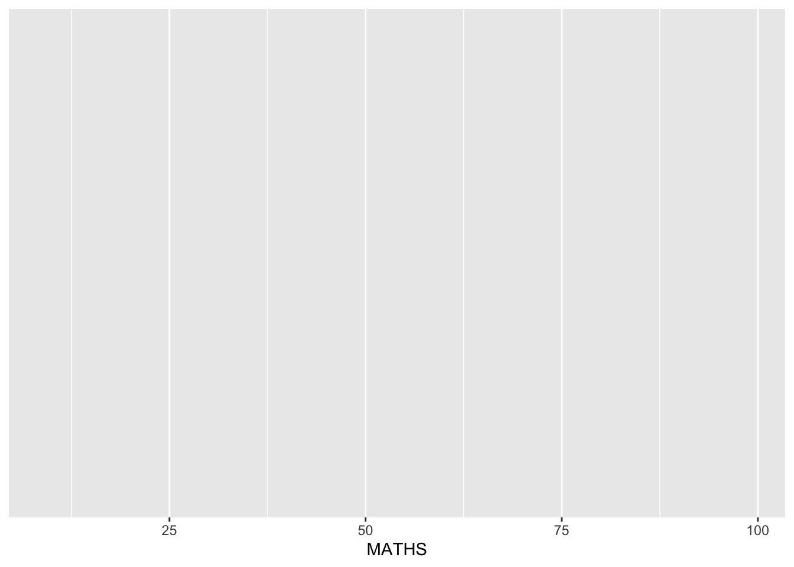
Note
ggplot includes the x-axis and the axis’s label.
1.7 Essential Grammatical Elements in ggplot2: geom
Geometric objects are the actual marks we put on a plot. Examples include:
geom_point for drawing individual points (e.g., a scatter plot)
geom_line for drawing lines (e.g., for a line charts)
geom_smooth for drawing smoothed lines (e.g., for simple trends or approximations)
geom_bar for drawing bars (e.g., for bar charts)
geom_histogram for drawing binned values (e.g. a histogram)
geom_polygon for drawing arbitrary shapes
geom_map for drawing polygons in the shape of a map! (You can access the data to use for these maps by using the map_data() function).
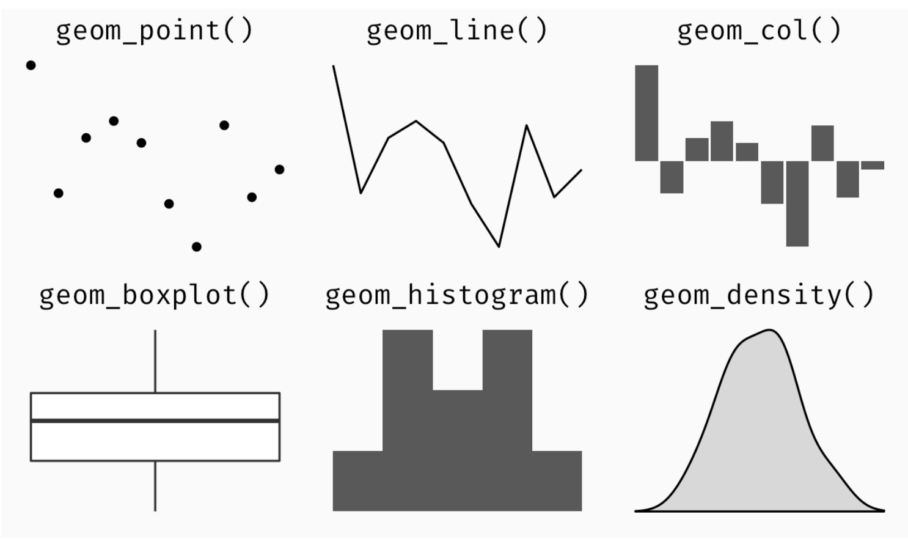
A plot must have at least one geom; there is no upper limit. You can add a geom to a plot using the + operator.
1.7.1 Geometric Objects: geom_bar
The code chunk below plots a bar chart by using geom_bar().
ggplot(data=exam_data,
aes(x=RACE)) +
geom_bar()
1.7.2 Geometric Objects: geom_dotplot
ggplot(data=exam_data,
aes(x = MATHS)) +
geom_dotplot(dotsize = 0.5)Bin width defaults to 1/30 of the range of the data. Pick better value with
`binwidth`.
::: Be warned The y scale is not very useful, in fact it is very misleading. :::
The code chunk below performs the following two steps:
scale_y_continuous() is used to turn off the y-axis, and
binwidth argument is used to change the binwidth to 2.5.
ggplot(data=exam_data,
aes(x = MATHS)) +
geom_dotplot(binwidth=2.5,
dotsize = 0.5) +
scale_y_continuous(NULL,
breaks = NULL) 
1.7.3 Geometric Objects: geom_histogram()
ggplot(data=exam_data,
aes(x = MATHS)) +
geom_histogram() `stat_bin()` using `bins = 30`. Pick better value with `binwidth`.
Note that the default bin is 30.
1.7.4 Modifying a geometric object by changing geom()
In the code chunk below,
bins argument is used to change the number of bins to 20,
fill argument is used to shade the histogram with light blue color, and
color argument is used to change the outline colour of the bars in black
ggplot(data=exam_data,
aes(x= MATHS)) +
geom_histogram(bins=20,
color="black",
fill="light blue") 
1.7.5 Modifying a geometric object by changing aes()
ggplot(data=exam_data,
aes(x= MATHS,
fill = GENDER)) +
geom_histogram(bins=20,
color="grey30")
This approach can be used to colour, fill and alpha of the geometric.
1.7.6 Geometric Objects: geom-density()
ggplot(data=exam_data,
aes(x = MATHS)) +
geom_density() 
ggplot(data=exam_data,
aes(x = MATHS,
colour = GENDER)) +
geom_density()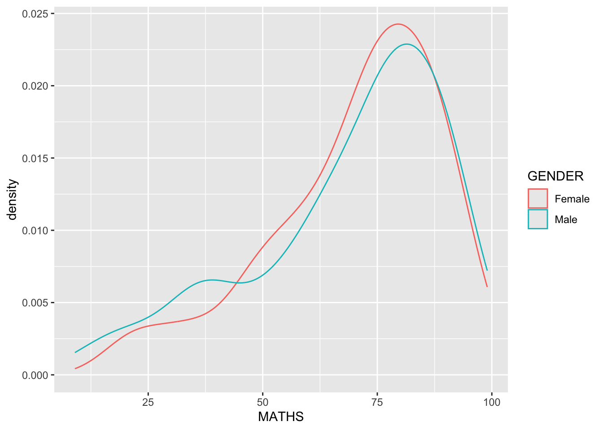
1.7.7 Geometric Objects: geom_boxplot
geom_boxplot() displays continuous value list. It visualises five summary statistics (the median, two hinges and two whiskers), and all “outlying” points individually.
ggplot(data=exam_data,
aes(y = MATHS,
x= GENDER)) +
geom_boxplot() 
Notches are used in box plots to help visually assess whether the medians of distributions differ. If the notches do not overlap, this is evidence that the medians are different.
The code chunk below plots the distribution of Maths scores by gender in notched plot instead of boxplot.
ggplot(data=exam_data,
aes(y = MATHS,
x= GENDER)) +
geom_boxplot(notch=TRUE)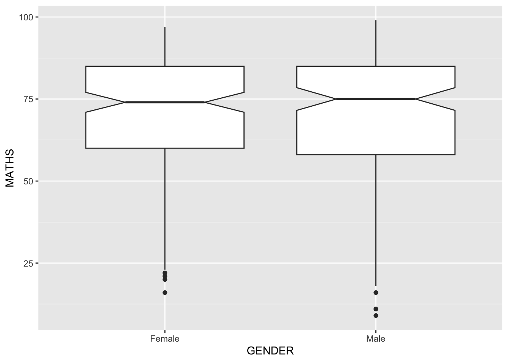
1.7.8 Geometric Objects: geom_violin
geom_violin is designed for creating violin plot. Violin plots are a way of comparing multiple data distributions. With ordinary density curves, it is difficult to compare more than just a few distributions because the lines visually interfere with each other. With a violin plot, it’s easier to compare several distributions since they’re placed side by side.
ggplot(data=exam_data,
aes(y = MATHS,
x= GENDER)) +
geom_violin()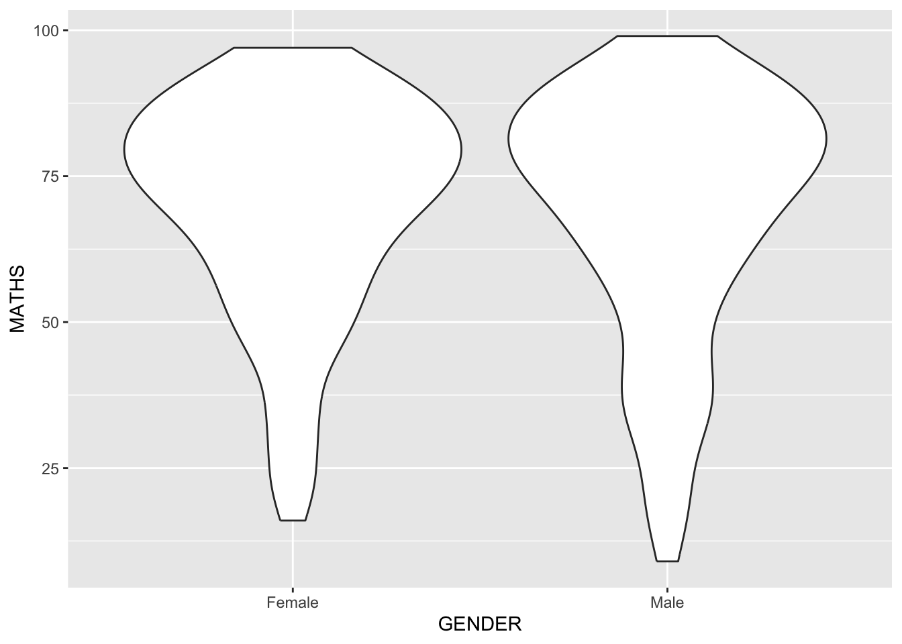
1.7.9 Geometric Objects: geom_point()
geom_point() is especially useful for creating scatterplot.
ggplot(data=exam_data,
aes(x= MATHS,
y=ENGLISH)) +
geom_point() 
1.7.10 geom objects can be combined
ggplot(data=exam_data,
aes(y = MATHS,
x= GENDER)) +
geom_boxplot() +
geom_point(position="jitter",
size = 0.5) 
1.8 Essential Grammatical Elements in ggplot2: stat
1.8.1 Working with stat()
ggplot(data=exam_data,
aes(y = MATHS, x= GENDER)) +
geom_boxplot()
1.8.2 Working with stat - the stat_summary() method
ggplot(data=exam_data,
aes(y = MATHS, x= GENDER)) +
geom_boxplot() +
stat_summary(geom = "point",
fun = "mean",
colour ="red",
size=4) 
1.8.3 Working with stat - the geom() method
ggplot(data=exam_data,
aes(y = MATHS, x= GENDER)) +
geom_boxplot() +
geom_point(stat="summary",
fun="mean",
colour="red",
size=4) 
1.8.4 Adding a best fit curve on a scatterplot?

ggplot(data=exam_data,
aes(x= MATHS, y=ENGLISH)) +
geom_point() +
geom_smooth(size=0.5)Warning: Using `size` aesthetic for lines was deprecated in ggplot2 3.4.0.
ℹ Please use `linewidth` instead.`geom_smooth()` using method = 'loess' and formula = 'y ~ x'
The default method used is loess.
ggplot(data=exam_data,
aes(x= MATHS,
y=ENGLISH)) +
geom_point() +
geom_smooth(method=lm,
linewidth=0.5)`geom_smooth()` using formula = 'y ~ x'
1.9 Essential Grammatical Elements in ggplot2: Facets
1.9.1 Working with facet_wrap()
ggplot(data=exam_data,
aes(x= MATHS)) +
geom_histogram(bins=20) +
facet_wrap(~ CLASS)
1.9.2 facet_grid() function
ggplot(data=exam_data,
aes(x= MATHS)) +
geom_histogram(bins=20) +
facet_grid(~ CLASS)
1.10 Essential Grammatical Elements in ggplot2: Coordinates
1.10.1 Working with Coordinate
ggplot(data=exam_data,
aes(x=RACE)) +
geom_bar()
ggplot(data=exam_data,
aes(x=RACE)) +
geom_bar() +
coord_flip()
1.10.2 Changing the y- and x-axis range
ggplot(data=exam_data,
aes(x= MATHS, y=ENGLISH)) +
geom_point() +
geom_smooth(method=lm, size=0.5)`geom_smooth()` using formula = 'y ~ x'
ggplot(data=exam_data,
aes(x= MATHS, y=ENGLISH)) +
geom_point() +
geom_smooth(method=lm,
size=0.5) +
coord_cartesian(xlim=c(0,100),
ylim=c(0,100))`geom_smooth()` using formula = 'y ~ x'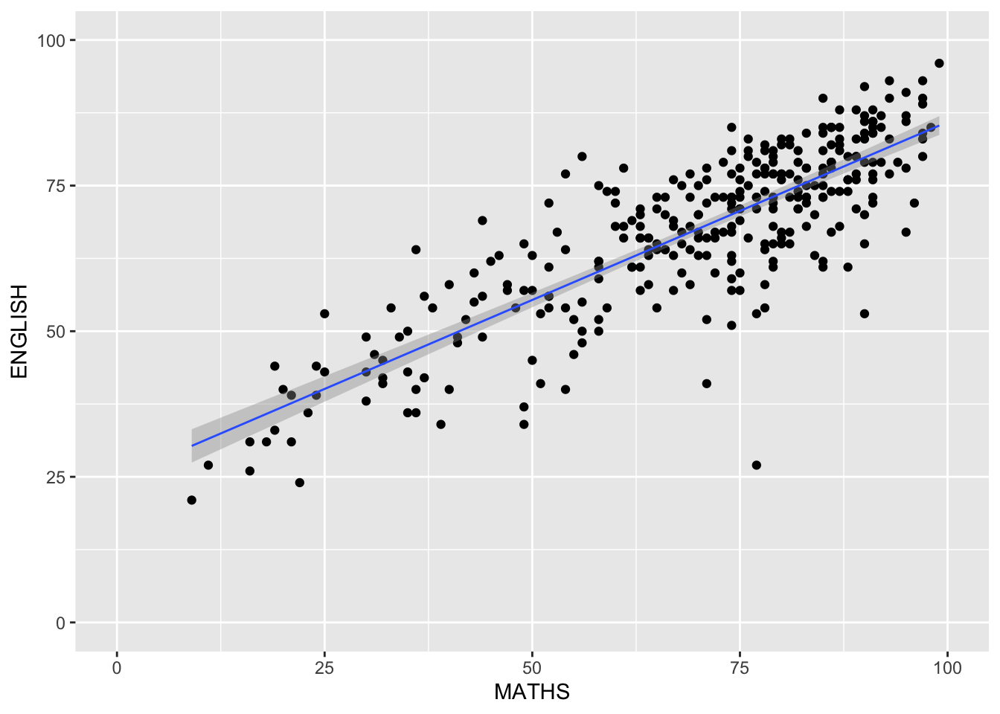
1.11 Essential Grammatical Elements in ggplot2: themes
1.11.1 Working with theme
ggplot(data=exam_data,
aes(x=RACE)) +
geom_bar() +
coord_flip() +
theme_gray()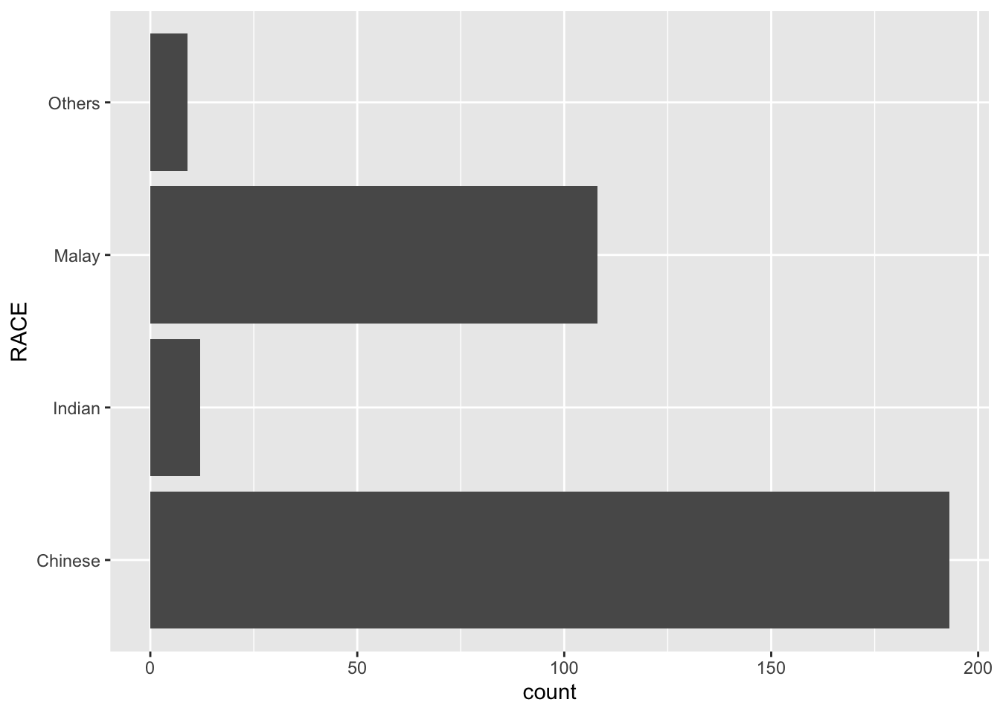
ggplot(data=exam_data,
aes(x=RACE)) +
geom_bar() +
coord_flip() +
theme_classic()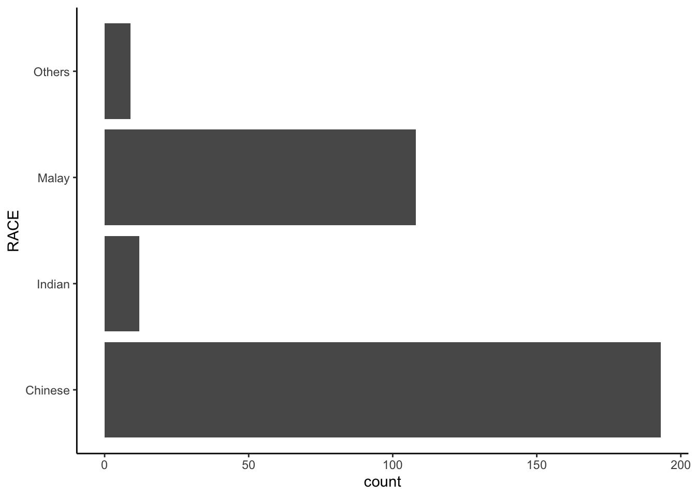
ggplot(data=exam_data,
aes(x=RACE)) +
geom_bar() +
coord_flip() +
theme_minimal()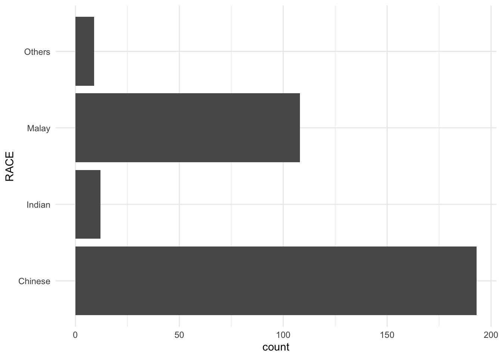
1.12 Reference
Hadley Wickham (2023) ggplot2: Elegant Graphics for Data Analysis. Online 3rd edition.
Winston Chang (2013) R Graphics Cookbook 2nd edition. Online version.
Healy, Kieran (2019) Data Visualization: A practical introduction. Online version
Statistical Graphics Methods Week 1
Singapore2017 <- read_csv("data/Singapore-2017.csv")Rows: 21 Columns: 3
── Column specification ────────────────────────────────────────────────────────
Delimiter: ","
chr (1): Age
dbl (2): M, F
ℹ Use `spec()` to retrieve the full column specification for this data.
ℹ Specify the column types or set `show_col_types = FALSE` to quiet this message.Age-sex Pyramid
Show the code
df_long <- Singapore2017 %>%
pivot_longer(cols = c("M", "F"), names_to = "Gender", values_to = "Count") %>%
mutate(Gender = recode(Gender, "M" = "Male", "F" = "Female"))
total_population <- sum(df_long$Count)
df_long <- df_long %>%
mutate(Percent = Count / total_population * 100,
Percent = ifelse(Gender == "Male", -Percent, Percent))
df_long$Age <- factor(df_long$Age,
levels = unique(Singapore2017$Age))
ggplot(df_long, aes(x = Age, y = Percent, fill = Gender)) +
geom_bar(stat = "identity", width = 0.9) +
coord_flip() +
scale_y_continuous(labels = function(x) paste0(abs(x), "%")) +
scale_fill_manual(values = c("Male" = "steelblue", "Female" = "lightcoral")) +
labs(title = "Singapore Population Pyramid (2017)",
x = "Age Group", y = "Population (%)") +
theme_minimal() +
theme(legend.position = "top",
plot.title = element_text(hjust = 0.5))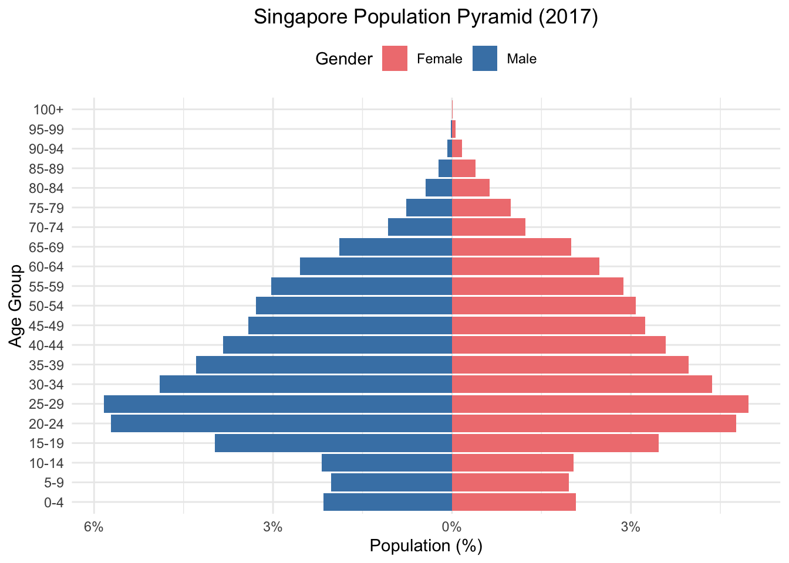
Pareto Chart
Show the code
defects <- c(
shrink = 67,
porosity = 13,
weld_LOF = 9,
shell_inclusion = 6,
hard_alpha_inclusion = 3,
tungsten_inclusion = 1
)
df <- data.frame(
defect = names(defects),
freq = as.numeric(defects)
) %>%
arrange(desc(freq)) %>%
mutate(
cum_freq = cumsum(freq),
cum_percent = cum_freq / sum(freq) * 100,
defect = factor(defect, levels = defect) # 控制 x 轴顺序
)
ggplot(df, aes(x = defect, y = freq)) +
geom_col(fill = "tomato") +
geom_line(aes(y = cum_percent * max(freq) / 100), group = 1, color = "steelblue", size = 1) +
geom_point(aes(y = cum_percent * max(freq) / 100), color = "steelblue", size = 2) +
scale_y_continuous(
name = "Defect Frequency",
sec.axis = sec_axis(~ . * 100 / max(df$freq), name = "Cumulative Percentage (%)")
) +
labs(
title = "Pareto Chart of Titanium Defects",
x = "Defect Type"
) +
theme_minimal() +
theme(
axis.title.y.right = element_text(color = "steelblue"),
axis.text.x = element_text(angle = 45, hjust = 1)
)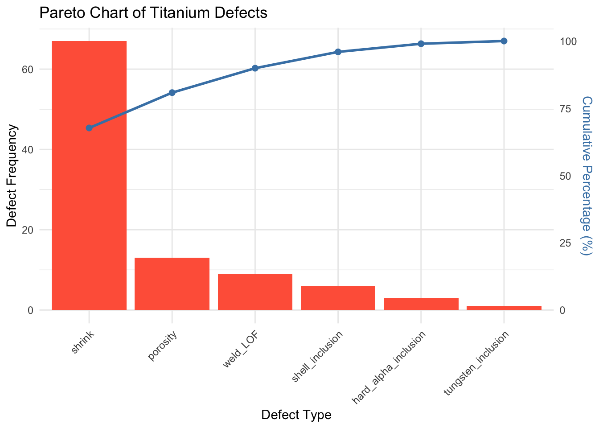
Trellis Display
Show the code
exam_long <- exam_data %>%
pivot_longer(cols = c(ENGLISH, MATHS, SCIENCE),
names_to = "Subject",
values_to = "Score")
ggplot(exam_long, aes(x = Score, fill = Subject)) +
geom_histogram(bins = 20, color = "black", alpha = 0.7) +
facet_wrap(~ Subject, scales = "free") +
labs(title = "Trellis Display: Score Distribution by Subject") +
theme_minimal()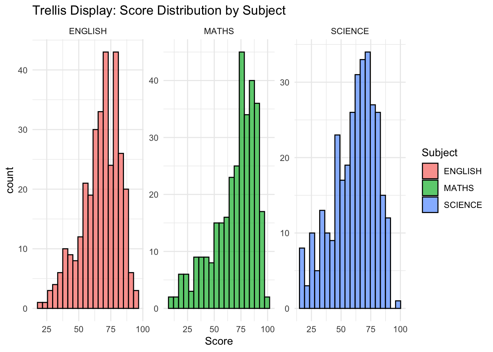